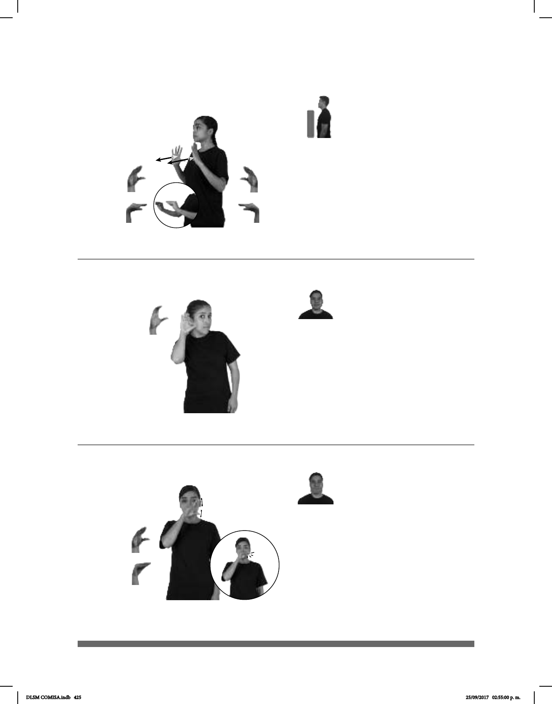

425
Seña: SS
Seña que pasa de C.4 a
C.6
Palmas oblicuas hacia fuera
y hacia el centro.
A la altura del pecho.
Recto hacia el frente
repetidamente mientras el pulgar se
aproxima a los dedos de la palma.
1. v. tr. Comunicar a alguien
algún conocimiento o alguna habilidad
para hacer algo. 2. sust. m. Acción o
suceso que sirve de experiencia,
enseñando o advirtiendo cómo se debe
obrar en casos análogos.
1
2
pos-MI MAESTRO TÚ ENSEÑAR ++ ME LSM
Mi maestro me enseña LSM
Seña: SM
Seña que pasa de C.4
a O.9
Palma oblicua hacia la
izquierda y hacia el frente.
A la altura de la boca.
El pulgar se aproxima a
los dedos de la mano repetidamente.
sust. m. Ave acuática con
el pico más ancho en la punta que en la
base, de patas cortas y palmeadas por lo
abundancia en estado salvaje y se
domestica con facilidad.
pos-MI HIJO+MUJER pro-ELLA GUSTAR PATO MUCHO
A mi hija le gustan los patos.
Seña: SM
C.1
Palma oblicua hacia
la izquierda y hacia enfrente.
Sobre la oreja.
v. tr. Prestar atención a
lo que se oye.
____________________________neg_____
pro-TU PLÁTICA++ pro-YO NO ESCUCHAR
No escucho tu conversación.
DLSM COMISA.indb 425 25/09/2017 02:55:00 p. m.